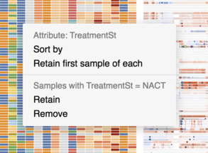

Faceting Multiple Samples¶
Work in progress
This part of the documentation is under construction and some features are still a bit unstable. For a live example, check the PARPiCL visualization.
GenomeSpy supports visualization and interactive manipulation of large sample
sets using a track-based layout. The samples operator splits (facets) the data
into groups and displays each group as a track. The same view specification
together with shared scales is used for all groups. This is also known as small
multiples, conditioning, or trellising.
The sample view scales to thousands of samples. You can look at a birds-eye view of the whole sample set and rapidly peek (zoom) into a few interesting samples. The interactive sorting, filtering, and grouping allows for analyzing patterns and outliers in the data.
Usage¶
A sample view is defined by the samples and spec properties. To assign a
track for a data object, define a sample-identifier field using the sample
channel. Layered views can flexibly use multiple data sources with different
sample fields.
{
"samples": {
// Explicit sample indentifiers and optional metadata
...
},
"spec": {
// A single or layer specification
...,
"encoding": {
...,
"sample": {
"field": "sampleId",
"type": "nominal"
}
}
}
}
Multidimensional data
The sample view can flexibly display multidimensional data. For instance, copy numbers and point mutations of multiple samples can be shown at the same time.
Y axis ticks
The Y axis ticks are not available on faceted views at the moment. Will be fixed at a later time.
But we have Band scale?
Superficially similar results can be achieved by using the
"band" scale on the y channel. However, you can not adjust the
intra-band y-position, as the y channel is already reserved for assigning
a band for a datum. On the other hand, with the band scale, the graphical
marks can span multiple bands. You could, for example, draw lines between
the bands.
Explicit sample identifiers and attributes¶
By default, the identifiers of the samples (groups) are extracted from the
data. (That's currently broken, sorry). However, you can also explicitly
specify the sample ids along with optional metadata attributes such as various
clinical data. The attributes are shown as color-coded columns in the left axis
area. The user can use these attributes to interactively filter,
group, and sort the samples.
The associated data must contain a sample column, which identifies the sample.
All other columns are interpreted as attributes. By default, the attribute data
types are inferred from the data; numeric attributes are interpreted as
quantitative data, all others as nominal. To adjust the data types and
scales, the attributes can be specified explicitly as shown in the
example below:
{
"samples": {
"data": { "url": "samples.tsv" },
"attributes": {
"RIN_Qual": {
"type": "ordinal",
"scale": {
"domain": [ "<5UQ", "5-7UQ", "5-7R", ">7R", ">7Q" ],
"scheme": "orangered"
}
},
...
}
},
...
}
Aggregation¶
TODO
Interactions¶
Peeking¶
GenomeSpy is designed to handle up to thousands of concurrently visible samples.
In order to see phenomena that span multiple samples, the whole sample set is
shown at the same time. To focus on a few specific samples, you can activate the
peek tool by pressing and holding the e key on the keyboard. You can try it
in the example below:
TODO
Sorting¶
Samples can be interactively sorted by sample-specific attributes and the actual data.
By sample-specific attributes¶
You can sort the samples by clicking the labels of the attributes.
TODO: A link to a visualization
By the actual data¶
TODO:
- How to sort
- Screenshot of the context-menu
- How to specify
Grouping¶
TODO
Filtering¶
SampleTrack also allows for interactive filtering of the samples. To filter, open a context-menu by clicking on the attributes with the right mouse button:

- Retain first sample of each
- Your data may have, for example, multiple samples from each patient. However, you might want to study only the "best" or "worst" samples from each patient and compare them with each other. This action groups the samples by the chosen attribute and drops all but the topmost sample of each group. Thus, you can first sort the samples by an attribute that ranks them and then retain only the top ranked samples.
- Retain
- TODO
- Remove
- TODO
GenomeSpy maintains a history of the visible samples and their orders. To return to the previous state, click the backtrack (TODO: picture) button or press the backspace key on the keyboard.
TODO: Provide an interactive example right here